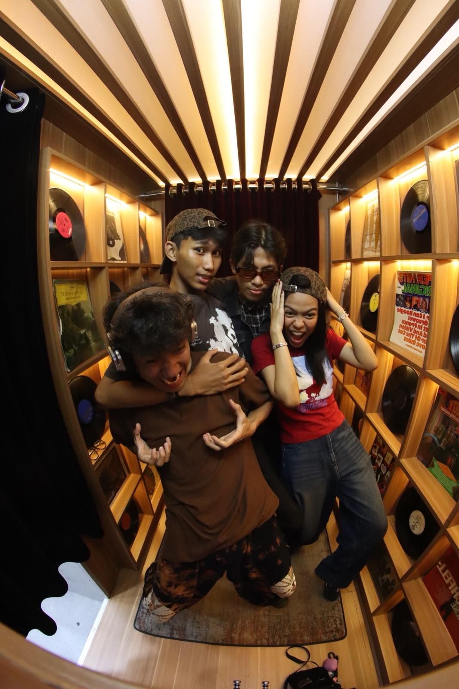
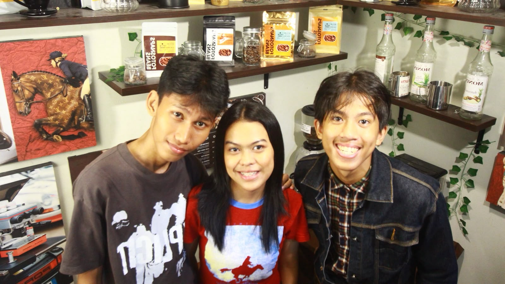
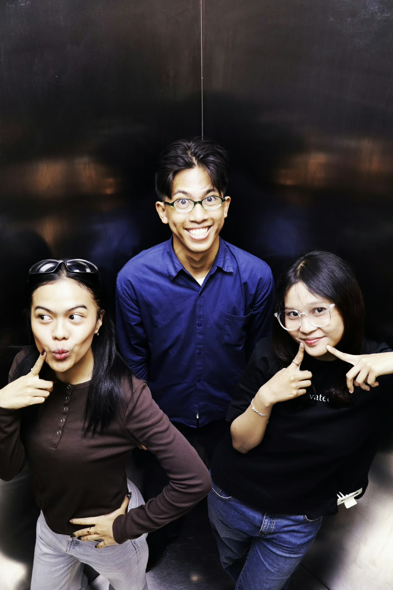
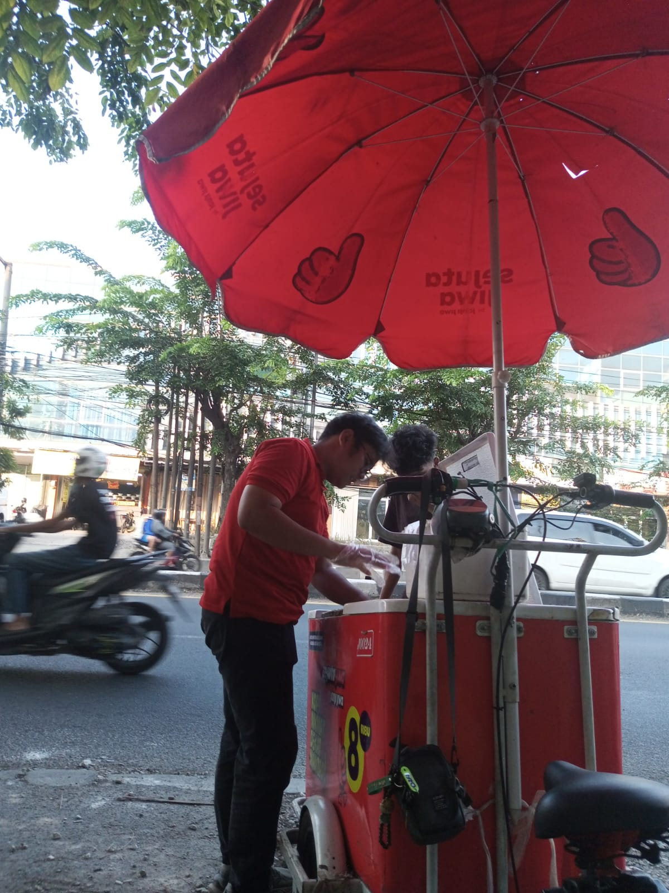
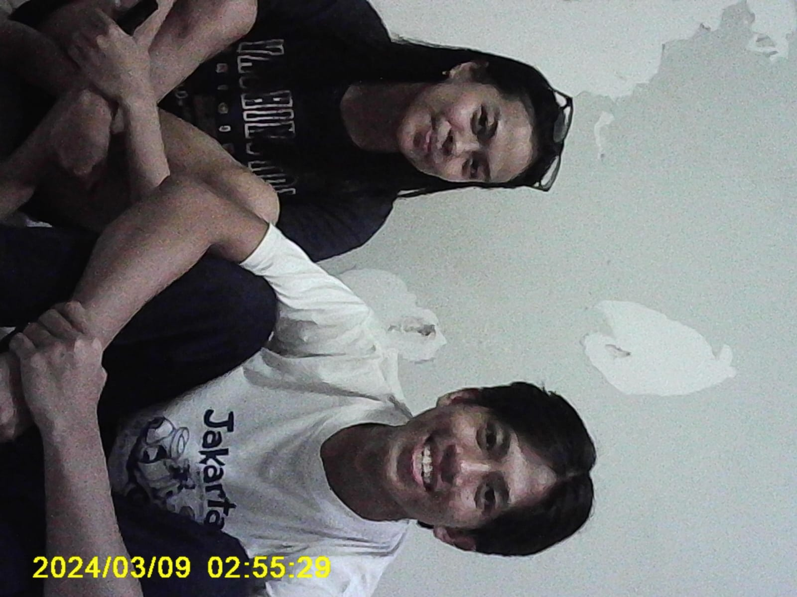
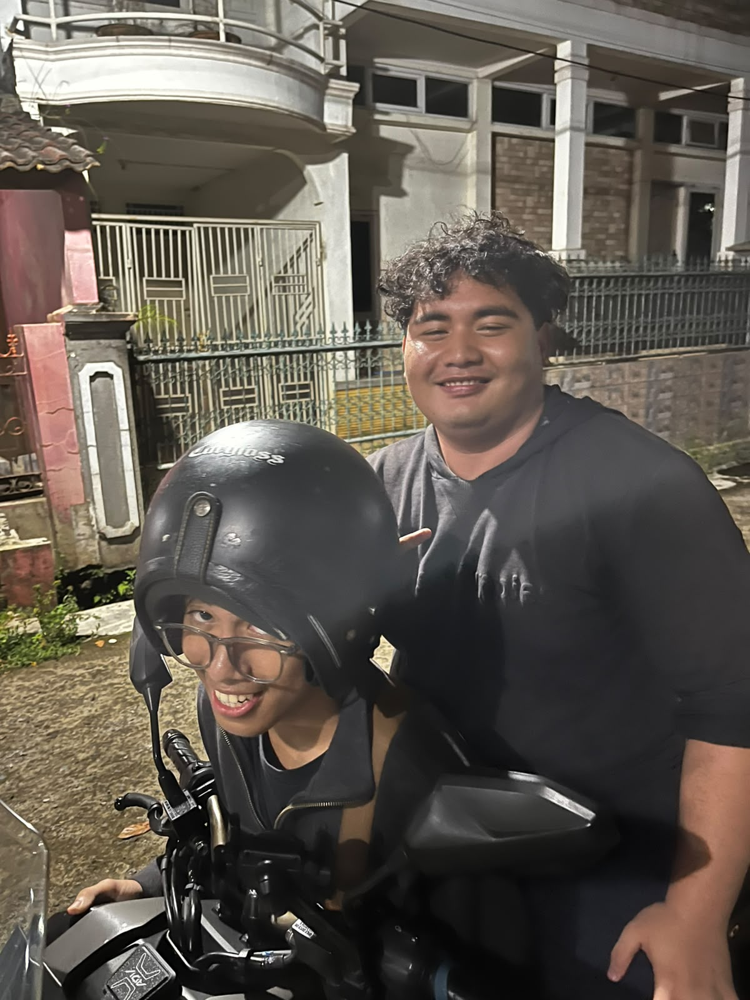
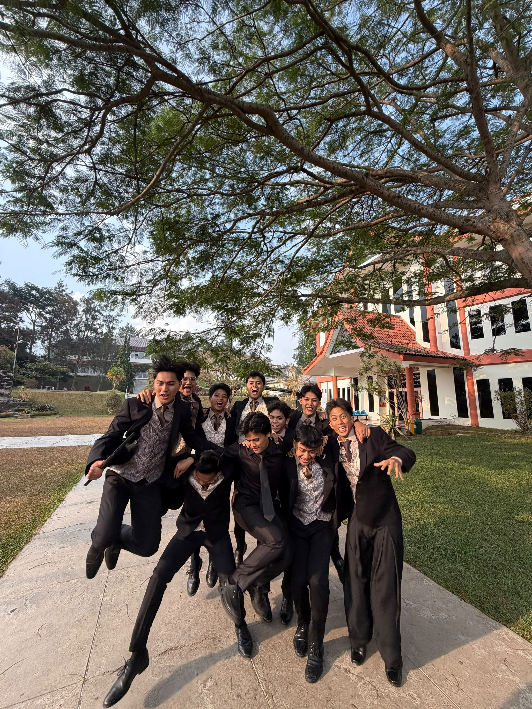

My Holiday
Three months, a lot of different days
I spent most of my break hanging out with my high school and college friends, visiting churches around Jakarta, and looking for work. An internship offer fell through, a few applications did not work out, and I ended up as a traveling coffee rider, which was tiring and paid very little. Later I moved to a part-time job at my old workplace with a friend, which felt much better. I went back to Bandung on the 14th and sang with my choir to welcome new students. Here are some moments from the break.
Photo Gallery






